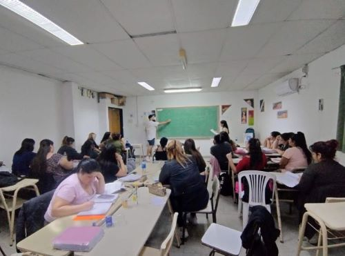

¿ QUIENES SOMOS ?
Liliana Ojeda

Somos Docentes en Formación, comisión directiva del Centro de Estudiantes, nacimos como agrupación en el año 2016 como un espacio colectivo de trabajo co un posicionamiento político pedagógico crítico que busca unificar a todos los que defendemos la educación pública y la descolonización de la educación pública inclusiva y feminista.
seguir leyendoFORMACIÓN CONTÍNUA
Ludmila Da SILVA
Desde este gremio de representación estudiantil entendemos que la formación docente es cosnstante y continua. Por eso trabajamos incansablemente para aportar calidad académica a nuestra trayectoria como estudiantes.
seguir leyendo